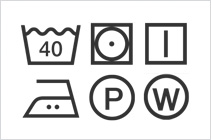

Through garments testing, some problems (like color transfer caused by color matching and puckering due to sewing ) have never been detected during textiles tests or local tests will be found out. Besides, care label information will also be checked.
Confirming whether the product has quality problem.
For example, asymmetry，twist，seam slippage, sewing dislocation, using of improper fabric, misusing button and zipper with pointed projections,etc.
In order to make the customers well informed, care label should notify the fiber contents and processing method according to the law issued by different countries.
For instance,according to Japanese law, the label should notify the information of origin country, prduct property, washing method, fiber contents in correct way.

The water washing or dry cleaning of textile is carried out according to the information clarified on care label.
But if customer has special requirements, we will do the test based on customer's order.
Because of the existence of the situation in which textile with good results in textile test may be detected with some problems during garments test, so the evaluation of garments appearance after washing is very important.
Because of the existence of the situation in which textile with good results in textile test may be detected with some problems during garments test, so the evaluation of garments appearance after washing is very important.